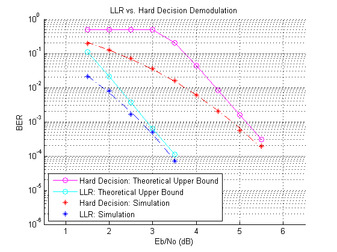

LLR vs. Hard Decision Demodulation
This demo illustrates the improvement in BER performance when using log-likelihood ratio (LLR) instead of hard decision demodulation in a convolutionally coded communication link.
Contents
Define System Parameters
The first step is to set up system parameters for simulation.
- M : Modulation alphabet size
- nSamp : Number of bits to simulate
- EbNo : Information bit Eb/No in dB
- codeRate : Code rate of convolutional encoder
- constlen : Constraint length of encoder
- codegen : Code generator polynomial of encoder
- tblen : Traceback depth of Viterbi decoder
M = 4; k = log2(M); nSamp = 9e4; EbNo = 3; % Code properties codeRate = 1/2; constlen = 7; codegen = [171 133]; tblen = 32; trellis = poly2trellis(constlen, codegen); % Create a local random stream to be used by random number generators for % repeatability. hStr = RandStream('mt19937ar', 'Seed', 55408);
Set up Modulator-Demodulator Objects
Use MODEM.PSKMOD and MODEM.PSKDEMOD objects to perform QPSK modulation and demodulation, respectively. The signal constellation has Gray mapping and the modulating signal is in binary form. The demodulator object will be used later to compute bitwise hard decision values as well as LLR by setting its DECISIONTYPE property appropriately.
modObj = modem.pskmod('M', M, 'SymbolOrder', 'Gray', 'InputType', 'Bit') demodObj = modem.pskdemod(modObj)
modObj =
Type: 'PSK Modulator'
M: 4
PhaseOffset: 0
Constellation: [1 0.0000 + 1.0000i -1.0000 + 0.0000i -0.0000 - 1.0000i]
SymbolOrder: 'Gray'
SymbolMapping: [0 1 3 2]
InputType: 'Bit'
demodObj =
Type: 'PSK Demodulator'
M: 4
PhaseOffset: 0
Constellation: [1 0.0000 + 1.0000i -1.0000 + 0.0000i -0.0000 - 1.0000i]
SymbolOrder: 'Gray'
SymbolMapping: [0 1 3 2]
OutputType: 'Bit'
DecisionType: 'Hard decision'
Transmitter Simulation
With the modulator and demodulator initialized, simulate the transmitter of the communication system. Generate an information message consisting of NSAMP bits. Encode the information message using a convolutional encoder, and modulate the encoded message using 8-PSK modulation.
infoMsg = randi(hStr, [0 1], nSamp, 1); codedMsg = convenc(infoMsg, trellis); transmittedMsg = modulate(modObj, codedMsg);
AWGN Channel
Pass the modulated signal through an additive white Gaussian noise channel. To achieve the required Eb/No, adjust the signal-to-noise ratio for coded bits and multi-bit symbols.
adjSNR = EbNo - 10*log10(1/codeRate) + 10*log10(k); receivedMsg = awgn(transmittedMsg, adjSNR, 'measured', hStr, 'dB');
Receiver Simulation
Demodulate the received signal to get both hard decision demodulation and LLRs. The demodulator object is configured accordingly. To compute the LLR, the demodulator object must be given the variance of noise as seen at its input. The demodulated signals are decoded using a Viterbi decoder. The Viterbi decoder is set up in 'HARD' and 'UNQUANT' modes to process hard decision demodulated signal and LLR outputs of the demodulator, respectively. Compare the input and outputs to determine BER.
% Set up the demodulator object to perform hard decision demodulation set(demodObj, 'DecisionType', 'Hard decision'); demodulatedMsg_HD = demodulate(demodObj, receivedMsg); % Set up the demodulator object to compute the LLR set(demodObj, 'DecisionType', 'LLR', 'NoiseVariance', 10^(-adjSNR/10)); demodulatedMsg_LLR = demodulate(demodObj, receivedMsg); % Use the Viterbi decoder in hard decision mode decodedMsg_HD = vitdec(demodulatedMsg_HD, trellis, tblen, 'cont', 'hard'); % Use the Viterbi decoder in unquantized mode decodedMsg_Unq = vitdec(demodulatedMsg_LLR, trellis, tblen, 'cont', 'unquant'); % Compute the bit error rate [nErrors_HD, ber_HD] = ... biterr(decodedMsg_HD(tblen+1:end), infoMsg(1:nSamp-tblen)) [nErrors_LLR, ber_LLR] = ... biterr(decodedMsg_Unq(tblen+1:end), infoMsg(1:nSamp-tblen))
nErrors_HD =
2846
ber_HD =
0.0316
nErrors_LLR =
19
ber_LLR =
2.1119e-004
Running Simulation Example
The next step simulates the above designed communications system over a range of Eb/No values by executing the example file SIMLLRVSHD. It plots BER results as they are generated. BER results for hard decision demodulation and LLR are plotted in red and blue respectively. A comparison of simulation results with theoretical results is also shown. Note that this example may take some time to compute BER results. To obtain results over a larger range of Eb/No values, modify this example file accordingly. Also, more statistically reliable results can be obtained by collecting more errors.
simLLRvsHD(1.5:0.5:5.5);